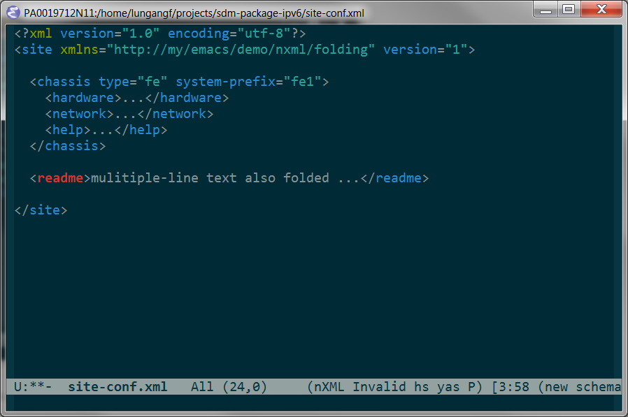
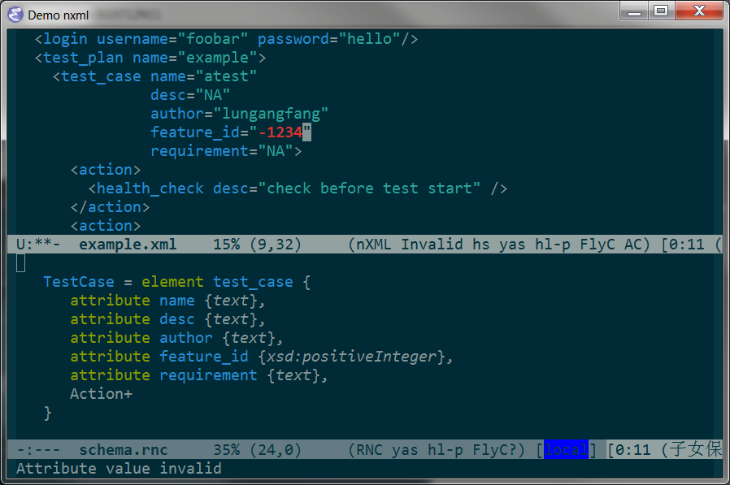
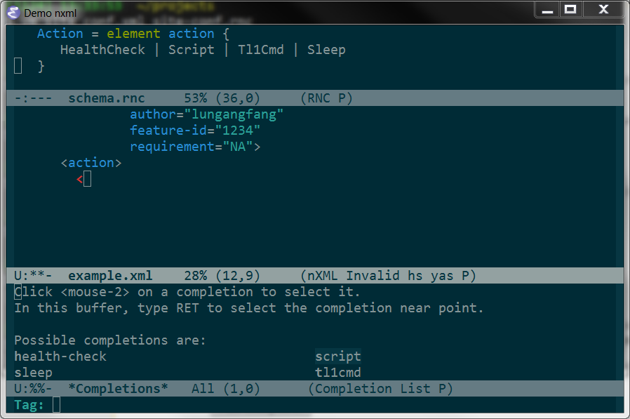

Editing XML in Emacs
Table of Contents
1 Desired Features
This article describes exactly my Emacs configurations for XML files.
In addition to basic features like indenting and syntax highlighting, your Emacs will get the following abilities after you go through the whole procedure here.
- Easy navigation
- Element folding
- Validation on the fly
- Prompting and auto completion
- Support of user-supplied schema
2 Navigation facility
Simply use nxml mode to edit xml, then we can:
- Forward element
C-M n- Backward element
C-M p- UP element
C-M u- Down element
C-M d
3 Folding
After a little bit configuration of hide-show. Note that I can just right-click mouse to fold/unfold current level.

4 Validation on the fly
This is a built-in functionality of nxml-mode. Refer to defining schemas for more.

5 Auto complete by nxml-mode
This comes with nxml-mode.

By default,
-
C-M-i - completion-at-point
-
C-c / - nxml-finish-element
6 Auto complete from "auto-complete"
7 Where am I
To show current xpath in echo area, use the following function
(defun nxml-where () "Display the hierarchy of XML elements the point is on as a path. from http://www.emacswiki.org/emacs/NxmlMode" (interactive) (let ((path nil)) (save-excursion (save-restriction (widen) (while (and (< (point-min) (point)) ;; Doesn't error if point is at ;; beginning of buffer (condition-case nil (progn (nxml-backward-up-element) ; always returns nil t) (error nil))) (setq path (cons (xmltok-start-tag-local-name) path))) (if (called-interactively-p t) (message "/%s" (mapconcat 'identity path "/")) (format "/%s" (mapconcat 'identity path "/")))))))
8 Configuration mentioned
8.1 Replace xml mode with nxml mode
The first thing to do is to tell Emacs to use nxml mode instead of xml mode when editing XML files.
(add-to-list 'auto-mode-alist
(cons (concat "\\." (regexp-opt
'("xml" "xsd" "sch"
"rng" "xslt" "svg" "rss") t)
"\\'") 'nxml-mode))
(when (> emacs-major-version 21)
(setq magic-mode-alist
(cons '("<\\?xml " . nxml-mode) magic-mode-alist)))
(fset 'xml-mode 'nxml-mode)
(fset 'html-mode 'nxml-mode)
(require 'rng-loc nil t)
8.2 Setup hide-show
- Simply configure "hide-show" as the following. Then, the beloved
hs-minor-mode works in nxml mode.
(add-hook 'nxml-mode-hook (lambda() (hs-minor-mode 1))) (add-to-list 'hs-special-modes-alist '(nxml-mode "<!--\\|<[^/>]*[^/]>" ;; regexp for start block "-->\\|</[^/>]*[^/]>" ;; regexp for end block "<!--" nxml-forward-element nil))
- Key-bindings I prefer
(defun lgfang-toggle-level () "mainly to be used in nxml mode" (interactive) (hs-show-block) (hs-hide-level 1)) (eval-after-load "nxml-mode" '(progn (define-key nxml-mode-map (kbd "M-'") 'lgfang-toggle-level) (define-key nxml-mode-map [mouse-3] 'lgfang-toggle-level)))
8.3 Setup ac-source
IMHO, the auto-complete interface of nxml is not up to par. And, I think the package "Auto Complete" should able to make use the source from nxml. And, it does.
- Download auto-complete-nxml.el from github.
- Load in your configure file.
(require 'auto-complete-nxml nil t)
- That is it. The auto-complete have nxml source now, just keep typing :).
9 Defining schemas
nxml-mode validates XML files using schemas in relaxng compact format. You can
define your own schemas.
9.1 A simple example
Maybe, this example is enough for you to get started to define your own schema using rnc (9.3).
default namespace auto = "http://my.com/test/automation/0.1" datatypes xsd = "http://www.w3.org/2001/XMLSchema-datatypes" namespace local = "" grammar { start = Job Job = element job { element web_server { attribute addr {text} }, element login { attribute username {text}, attribute password {text} }, TestPlan + } TestPlan = element test_plan { attribute name {text}, TestCase + } TestCase = element test_case { attribute name {text}, attribute desc {text}, attribute author {text}, attribute feature_id {xsd:positiveInteger}, attribute requirement {text}, Action+ } Action = element action { HealthCheck | Script | Tl1Cmd | Sleep } HealthCheck = element health_check { attribute desc {text} } Script = element script { attribute desc {text}, attribute equipment {text}, attribute parameter {text} } Tl1Cmd = element tl1cmd { attribute desc {text}, attribute tl1_type { "new" | "remove" }, attribute switch_type { list { (token "SG" | token "MGC" | token "MG")+ }}, element cmd_str {text}, element expect {text} } Sleep = element sleep { attribute desc {text}, attribute duration {xsd:unsignedShort} } }
Corresponding xml is some like this:
<?xml version="1.0" encoding="utf-8"?> <job xmlns="http://my.com/test/automation/0.1" > <web_server addr="http://web.my.com/auto.jsp" /> <login username="foobar" password="hello"/> <test_plan name="example"> <test_case name="atest" desc="NA" author="lungangfang" feature_id="1234" requirement="NA"> <action> <health_check desc="check before test start" /> </action> <action> <tl1cmd desc="run a tl1cmd at first" tl1_type="new" switch_type="MG MGC"> <cmd_str>rtrv-info-eqpt;</cmd_str> <expect>COMPLD</expect> </tl1cmd> </action> <action> <script desc="the test script" equipment="ISUP-ES" parameter="BASIC_ISUP_SIPT" /> </action> <action> <sleep desc="wait a minute" duration="60" /> </action> </test_case> </test_plan> </job>
For tutorial of relaxng at length, refer to http://relaxng.org/compact-tutorial-20030326.html
(add-to-list 'auto-mode-alist '("\\.rnc\\'" . rnc-mode)) (autoload 'rnc-mode "rnc-mode")
9.2 Tell nxml where to find the schema
- rnc goes with xml file. I.e.
If you are editing
~/project/test.xml, nxml will try to read~/project/test.rncfor schema if there is. - Or, define the mapping in a file
Details in (info "(nxml-mode) Schema locating files")
- setup rng-schema-locating-files
(add-to-list 'rng-schema-locating-files "~/mynotes/emacs/schema-locations.xml") - The "schema-locations.xml" looks like this:
<?xml version="1.0" encoding="utf-8"?> <!-- this file tells emacs nxml mode where to find schema files in addition to "standard" ones --> <locatingRules xmlns="http://thaiopensource.com/ns/locating-rules/1.0"> <!-- Make it easier to refer to the rnc multiple times --> <typeId id="my test automation" uri="../coding/examples/snt/schema.rnc"/> <!-- if ns of root node is this, use ... --> <namespace ns="http://my.com/test/automation/0.1" typeId="my test automation"/> <!-- if name of root node is this, use ... --> <documentElement localName="site" uri="../../projects/site-conf.rnc"/> </locatingRules>
In fact, way 1 works simply because there is already the following line in "standard" locating file:
<transformURI fromPattern="*.xml" toPattern="*.rnc"/>
- setup rng-schema-locating-files
9.3 Editing rnc file
Here are some facilities for editing "*.rnc", which depends on rnc-mode.el, flycheck, jing, trang and "cygpath" I wrote (refer to my init.el). If it seems overwhelming to you, just skip this section.
(add-to-list 'auto-mode-alist '("\\.rnc\\'" . rnc-mode)) (autoload 'rnc-mode "rnc-mode") (setq rnc-enable-imenu t rnc-jing-jar-file (expand-file-name "~/.local/libexec/jing-20091111/bin/jing.jar")) (when (require 'flycheck nil t) (flycheck-define-checker rnc "Check rnc files using jing.jar See URL `https://github.com/TreeRex/rnc-mode' and `http://www.thaiopensource.com/relaxng/jing.html'" :command ("java" "-jar" (eval (cygpath rnc-jing-jar-file)) "-c" (eval (cygpath (flycheck-save-buffer-to-temp #'flycheck-temp-file-system "flycheck")))) :error-patterns ((error line-start (zero-or-more anything) ":" line ":" column ": error:" (message) line-end)) :modes rnc-mode) (add-to-list 'flycheck-checkers 'rnc)) (defun rnc2rng () "convert rnc to rng - lgfang" (interactive) (let* ((rnc (buffer-file-name)) (rng (concat (file-name-sans-extension rnc) ".rng"))) (call-process "java" nil nil nil "-jar" (cygpath (expand-file-name "~/.local/libexec/trang-20091111/trang.jar")) (cygpath rnc) (cygpath rng))))
9.4 XSD instead of RNC
RNC is nice: simple and clear. But we have to deal with XSD as there are legacy code as well as other people/applications stick to XSD.
There are ways (not many) to convert XSD from/to RNC. Here is what I tried.
- From RNC to XSD
- Download "trang" from google code
- Run the following command:
java -jar trang.jar path/to/your.rnc your.xsd
For more details, refer to the manual of trang.
- From XSD to RNC
Well, this maybe a little overwhelming. But, anyway, you set it up only once.
- Add Firefox addon "web developer extension" from here.
- Copy "XSDtoRNG.xsl" to the same directory as your XSD. You can get the XSL from from GitHub.
- Edit your XSD, add the following line
<?xml-stylesheet type="text/xsl" href="XSDtoRNG.xsl"?>
- Open your XSD in firefox and "web developer extension" -> "view source" -> "view generated source"
- Save the source to a file, say "tmp.rng".
- Use "trang" to convert the RNG to RNC:
jar -jar path/to/trang.jar tmp.rng your.rnc
10 Q&A
Thanks